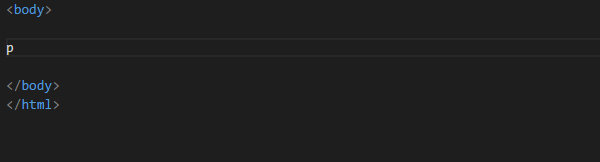
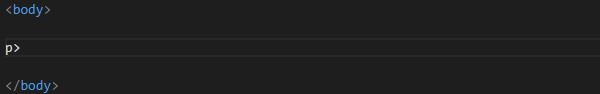

Emmet
Emmet är inbyggt från början i Visula Studio Code och vi använder ENTER för att köra vår emmetsträng.
Du kan även trycka på skiftnyckeln som dyker upp för att köra emmetsträngen.
Om det är så att man glömmer trycka på ENTER så kan man ställa sig direkt efter sin emmetsträng och trycka CTRL + MELLANSLAG för aktivera den igen.
Läs gärna igenom Emmet in Visual Studio Code i dokumentationen för Visual Studio Code.
Skapa dokumentmallen

För att skapa dokumentmallen (html) använder vi utropstecknet.
Bygga emmetsträngar
Använda plustecknet
Använder man plustecknet så skapar man två element efter varandra. Skriver vi h1+p kommer vi således få först en h1:a och därefter ett p.
När vi har kört vår emmetsträng så får vi insättnigspunkter för innehållet i taggarna och vi kan nu använda TAB för att hoppa mellan dem.
Använda gångertecknet

Vill vi skapa flera element av samma typ så kan vi använda oss av gångertecknet, t ex p*3.
Använda pil

Med pilen kan vi lägga till barntaggar.

Vi kan även använda pilen tillsammans med lorem för att fylla en tagg med innehåll.
Använda parenteser
Exempel 1
<h1></h1>
<p></p>
<p></p>
<ol>
<li></li>
<li></li>
</ol>
<p></p>
Låt säga att vi vill skapa koden ovan med hjälp av emmet
För att göra det skriver vi h1+p*2+(ol>li*2)+p.
Som du ser använder vi parenteser för att avgränsa delar av emmetsträngen. Om vi hade hoppat över parenteserna så skulle sista p-taggen återfinnas som ett barnelement i listan.
Exempel 2
<div class="card">
<h1></h1>
<img src="" alt="">
<p></p>
</div>
<div class="card">
<h1></h1>
<img src="" alt="">
<p></p>
</div>
Låt säga att vi vill skapa koden ovan med hjälp av emmet
För att göra det skriver vi (.card>h1+img+p)*2. Som du ser så räcker det med att skriva .card för att skapa en div med klassen card.
Sätta attribut
Med hjälp av fyrkantsparenteser kan vi sätta värdet på ett attribut.
Vill vi sätta flera attribut samtidigt använder vi ett mellanslag mellan attributen, t ex input[name=test value=test].
Lägga till innehåll
Med hjälp av klammerparenteser (“måsvingar”) kan vi lägga till innehåll i en tagg direkt i emmetsträngen.
Här visar vi hur vi kan sätta både attribut och innehåll på en gång.
Lägga till en kommentar vid slutet på klasser/id:n

Vill man lägga till en automatisk kommentar som visar var en klass/id slutar använder vi pipetecknet + c, t ex .card>(h1+p)|c.
Lägga till flera klasser på en gång
Om man vill lägga till flera klasser på en gång så skriver man ihop klasserna, t ex .klass1.klass2.
Lägga till nummer

Man kan med $-tecknet lägga till nummer. I exemplet här skriver vi ul>li.item${listpunkt $}*3 och som du ser kan vi numrera t ex både klassnamn och i innehållet.
Emmet i formatmallen (CSS)
Givetvis fungear emmet även i formatmallen.
| Emmet | Resultat |
|---|---|
| m10 | margin: 10px; |
| p10 | padding: 10px; |
| bd | border: 1px solid #000; |
| fw | font-weight: normal; |
| fwb | font-weight: bold; |
| fw400 | font-weight: 400; |
| fz20 | font-size: 20px; |
| fz1.5rem | font-size: 1.5rem; |
| h150px | height: 150px; |
| w150px | width: 150px; |
Här har vi enbart listat några favoriter.
När man anger värden kan man ange dem med eller utan enhet. om man utelämnar enheten blir det i de flesta fall enheten px. Man har även förkortat vissa populära enheter, t ex:
- p ger %; m10p ger margin: 10%;
- e ger em, m10e ger margin: 10em;
- r ger rem, m10r ger margin: 10rem;

När det kommer till att skriva CSS-egenskaper är det inbyggda systemet IntelliSense att rekommendera.